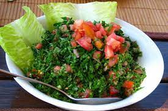

The Sfiha is simply a small meat pastry .Where the people
prepare a dough of flour, water, yeast, salt and oil, and cook meat, chopped onions and pine nuts,
then stuff the dough and put it in the oven.
Tabouleh

It is considered the most famous item of Lebanese cuisine, and it is a salad of
vegetables and vegetables, and bulgur is added to it, and that is one of the most famous components of
Lebanese cuisine
Kibbeh Naye
A magical mixture of bulgur, ground meat, pepper and chopped walnuts,
garnished with whole walnuts, served as a cold appetizer alongside the main course.